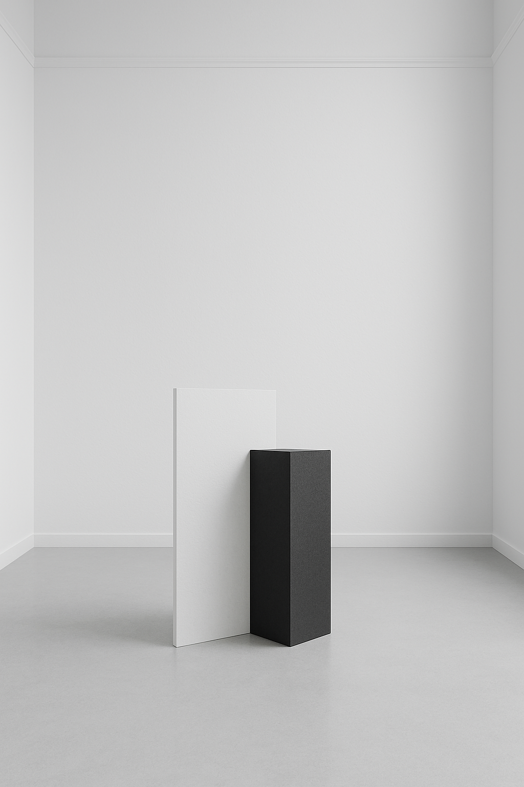

PRINCIPIOS
Home
Historia
Autores
Galeria
Abrir perfil
Principios
& Recursos

Vacío
Espacio en blanco como elemento.
Jerarquía por ausencia.
Forma Básica
Geometría elemental (cubo, plano, línea).
Reducción a lo esencial.
Repetición
Módulo, serie y ritmo visual.
Orden y coherencia.
Recursos curados para profundizar
Explorar recursos